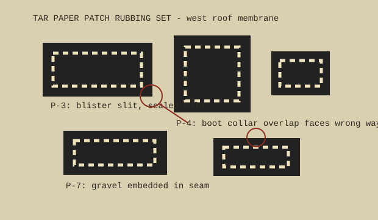

| Patch | Location | Observed condition | Action |
|---|---|---|---|
| P-1 | south of hatch curb | old square patch, edges brittle, gravel missing in center | photograph annually, do not lift |
| P-3 | between drain 2 and soil stack | blister slit sealed cold; crescent-shaped ridge holds water after storms | probe only when dry |
| P-4 | pipe boot at west parapet | collar lap faces prevailing wind, tar lip feathered by hand | mark for warm-day correction |
| P-7 | old sign stanchion shadow | gravel embedded through top ply, shoe print in coating | leave print as datum |
The blackest tar is not necessarily newest. Sunken seams near the elevator bulkhead look fresh after rain because the ponding water polishes them.